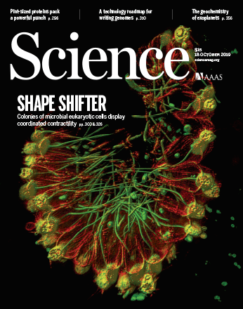
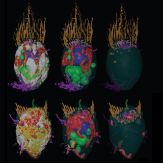

Home
About
Research
Publications
Contact
Ben Larson
Postdoc |
Marshall lab |
UCSF
About
Research
Publications
Ben Larson
Postdoc |
Marshall lab |
UCSF
Contact
Gallery
Publications
A unicellular walker controlled by a microtubule-based finite-state machine
BT Larson
, J Garbus, JB Pollack, WF Marshall
Curr. Biol. 32 (17).
Link
Popular press:
New Scientist
,
UCSF News
2022
A hydraulic instability drives the cell death decision in the nematode germline
NT Chartier*, A Mukherjee*, J Pfanzelter*, S Fürthauer,
BT Larson
, AW Fritsch, M Kreysing, F Jülicher, SW Grill
Nat. Phys. 1-6
PDF
* denotes equal contribution
Highlighted in journal:
Nature Physics
2021
Biophysical principles of choanoflagellate self-organization
BT Larson
, T Ruiz-Herrero, S Li, S Kumar, L Mahadevan, N King
PNAS 117 (3).
PDF
2020
Light-regulated collective contractility in a multicellular choanoflagellate
T Brunet*,
BT Larson
*, TA Linden*, MJA Vermeij, KL McDonald, N King
Science 366 (6463).
PDF
* denotes equal contribution
Highlighted in journals:
Science
,
eLife
, and
Current Biology
Popular press:
Scientific American
,
Science News
, and
Science Daily
2019
The architecture of cell differentiation in choanoflagellates and sponge choanocytes
D Laundon,
BT Larson
, KL McDonald, N King, P Burkhardt
PLOS Biology 17 (4).
PDF
2019
Systematic spatial mapping of proteins at exocytic and endocytic structures
BT Larson
, KA Sochacki, JM Kindem, JW Taraska
MBoC 25 (13).
PDF
2014
Lessons from environmental ethics about the intrinsic value of synthetic life
MA Bedau and
BT Larson
GA Kaebnick and TH Murray (Ed.)
Synthetic biology and morality: artificial life and the bounds of nature, MIT Press.
Link
2013
Imaging the post-fusion release and capture of a vesicle membrane protein
KA Sochacki,
BT Larson
, DC Sengupta, MP Daniels, G Shtengel, HF Hess, JW Taraska
Nature Communications 3 (1).
PDF
2012


PLOS Biology cover image, Davis Laundon and
Pawel Burkhardt